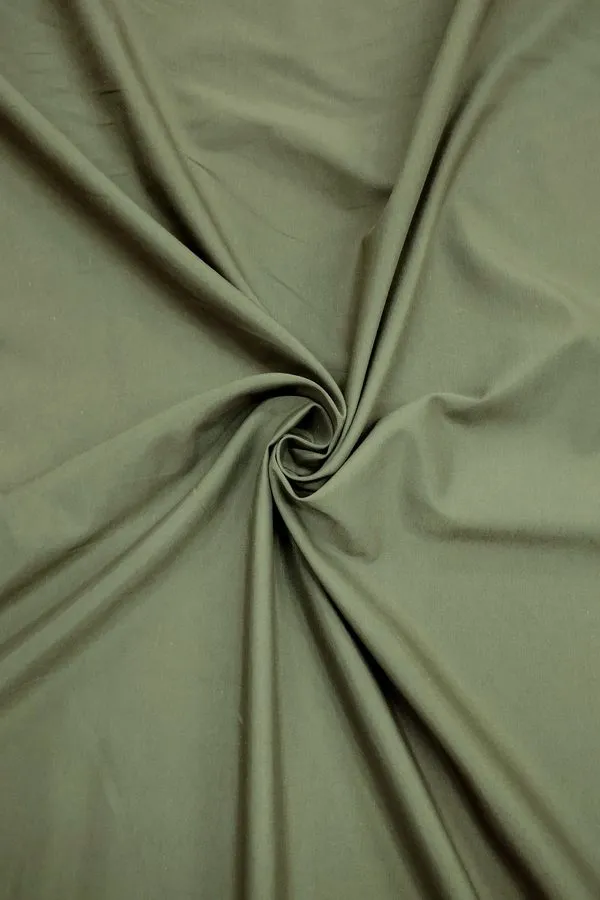
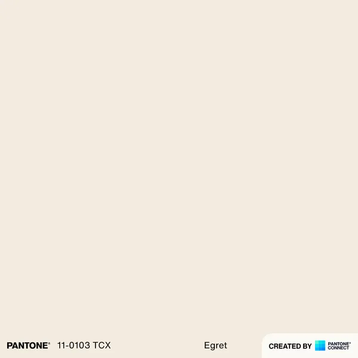
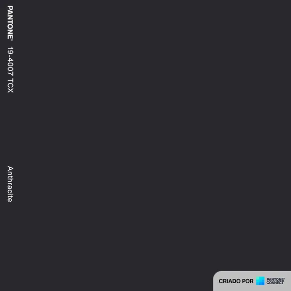

Tejido
Mac Nyco Elastic

Mac Nyco Elastic es un tejido en tafetán de 49% algodón, 47% poliamida 6.6 (Nylon) y 4% elastano, 100 g/m² y 1,45 m de ancho, con elastano. Indicado para shorts, bermudas, abrigos y camisas — disponible en 2 colores.
Cód. 16106
Mac Nyco Elastic
- Composición
- Gramaje
- 100 g/m²
- Ancho
- 1,45 m
- Ligamento
- Tafetán
- Aplicaciones
- ShortsBermudasAbrigosCamisas
Tecnología exclusiva
Este tejido es MacFlex™
El MacFlex™ aporta elasticidad superior, estabilidad dimensional y confort prolongado — con recuperación que no se deforma y resistencia para uso intenso.
Ver la página de las tecnologías →Colores disponibles 2
-

0372 Blanco Hueso Pantone 11-0608 TCX -

9999 Negro Pantone 19-4007 TCX
Instrucciones de lavado
- Lavar por separado; en los primeros lavados la prenda puede soltar tinte residual.
- Para prendas con combinación de colores, recomendamos lavado a mano.
- No mezclar colores claros y colores intensos al lavar las prendas.
- Evite frotar con fuerza al lavar la prenda a mano.
- No mezclar prendas ligeras con prendas pesadas.
- Enjuague las prendas con agua en abundancia.
- Lavar a temperatura ambiente.
- No dejar en remojo.
- No retorcer el tejido.

{kind=link}